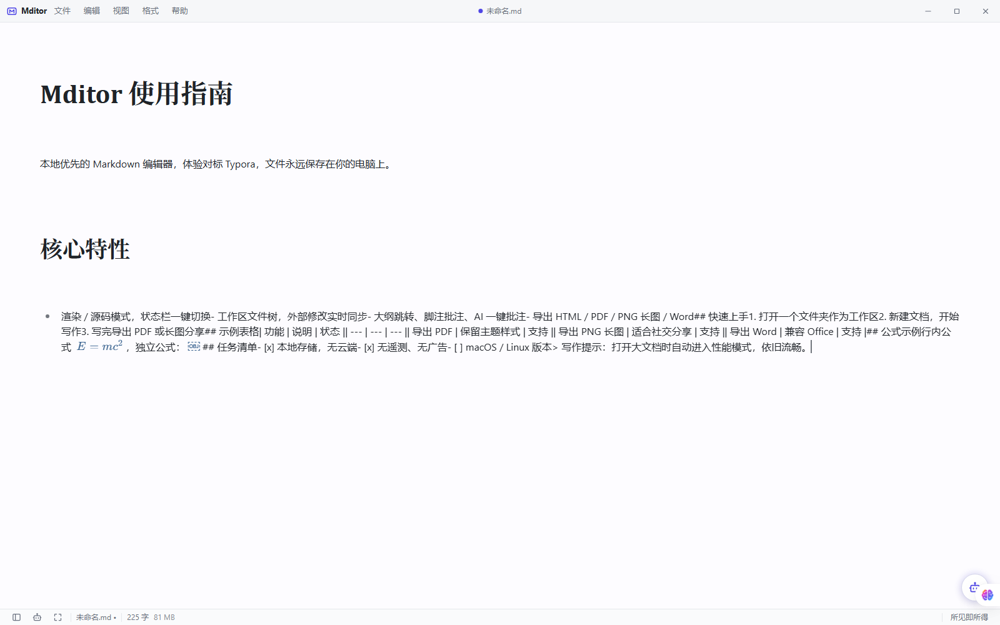
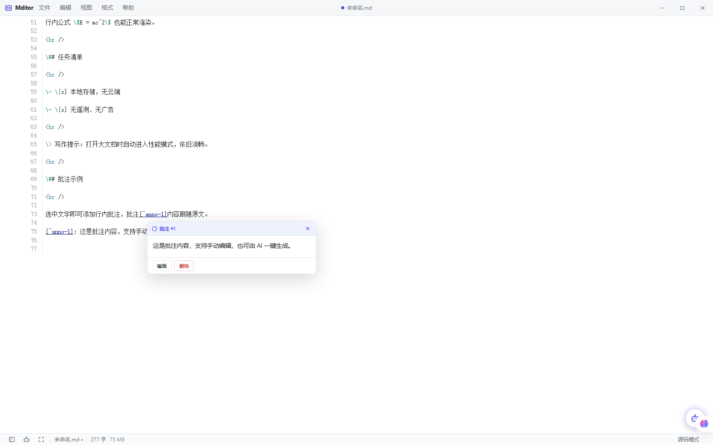
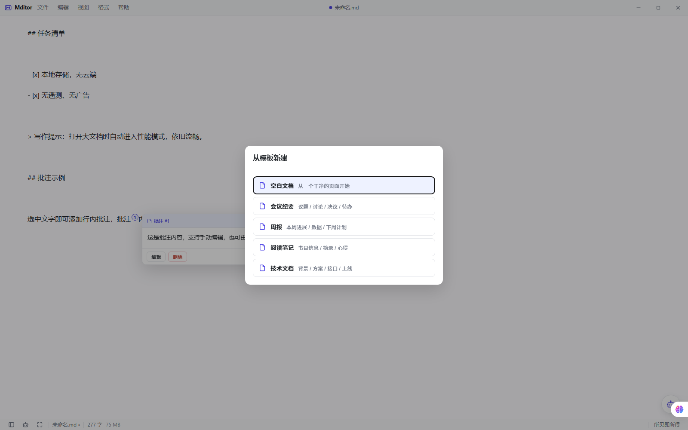
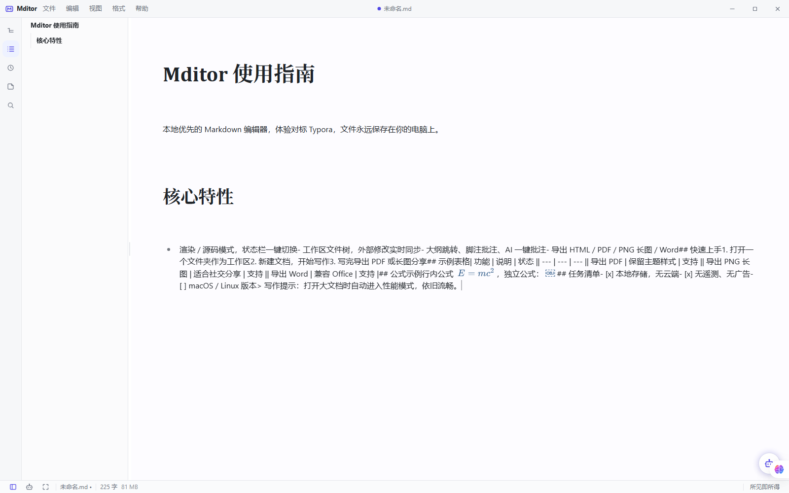
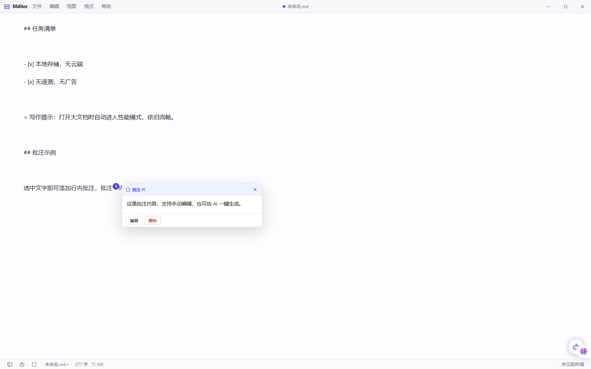
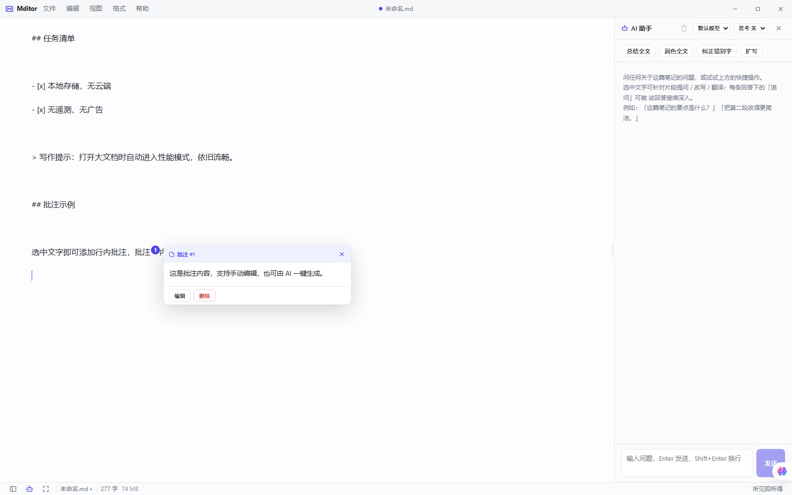
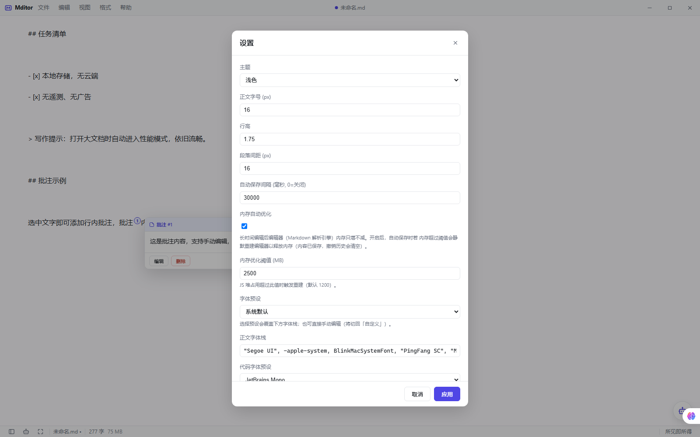

Features
功能特性
为认真写作的人打造
所见即所得
Milkdown/ProseMirror 内核，支持 GFM、KaTeX 公式、代码高亮；所见即所得 / 即时渲染 / 源码三种模式一键切换。
工作区文件树
懒加载目录、批量操作、外部修改实时监听；多标签页 + 拖放打开，改动自动同步并给出冲突确认。
AI 写作助手
OpenAI 兼容接口，内置 DeepSeek / 智谱 / Kimi / OpenRouter / Ollama 预设；SSE 流式输出，选中文字即可改写、翻译、解释。
大纲与批注
侧边栏大纲一键跳转；原生脚注语法的行内批注，支持 AI 一键生成，阅读与写作互不干扰。
多格式导出
HTML / PDF / PNG 长图 / Word (docx)，主题样式完整保留；支持复制富文本直接粘贴到微信、Word。
本地优先 · 隐私安全
设置与最近文件仅存于本机；严格 CSP、HTML 消毒、出站请求全部经 Rust 代理——没有遥测，没有数据上传。
Guide
操作说明
覆盖全部功能，五分钟上手
打开文件夹
「文件 → 打开文件夹」选择你的笔记目录，工作区文件树自动加载；也可以直接把 .md 文件拖进窗口快速打开。
开始写作
所见即所得，像用 Word 一样写 Markdown：表格、公式、任务清单、代码块全部实时渲染，状态栏实时显示字数。
保存与导出
Ctrl+S 随时保存；写完导出 PDF / PNG 长图 / Word / HTML，或复制为富文本，分享投稿都方便。
核心优势
- 5 MB 安装包，秒开
- 本地优先，文件永远属于你
- 零遥测，无广告无上报
- AI 助手，自带多模型预设
- 大文档不卡，性能模式兜底
- 完全开源，MIT 协议

1 · 写作与格式化
主编辑区干净专注：标题、加粗（Ctrl+B）、高光（Ctrl+Shift+H）、斜体、删除线、行内代码全部即输即得；选中文字会弹出浮动工具栏，链接、图片、脚注一键插入。
底部状态栏显示文档名、字数与当前模式；侧边栏（Ctrl+\）与 AI 面板（Ctrl+I）随时开关。

2 · 三种编辑模式
状态栏下拉一键切换，初稿阶段用所见即所得，快速浏览用即时渲染，精确控制格式切源码模式——同一份文档随时互换，内容不会丢失。
切换模式会重建编辑器以释放内存，大文档长时间编辑也不卡顿。
3 · 工作区与文件管理

4 · 从模板新建
「文件 → 从模板新建」内置空白文档、会议纪要、周报、阅读笔记、写作提纲等多种模板，日期自动填充，新建即用。
也支持从本地文件新建：Ctrl+N 新建空文档，Ctrl+O 打开任意 .md 文件。

5 · 大纲导航
侧边栏「大纲」自动提取全文标题，长文结构一目了然，点击任意标题即跳转；阅读与写作互不干扰。
侧边栏五个标签切换：文件树 / 大纲 / 最近 / 批注 / 搜索，批注标签带数量角标。

6 · 行内批注
选中任意文字点浮动工具栏的「批注」，即在该处生成脚注式标记；点击标记查看内容，随时编辑或删除。
AI 助手回复也可以一键「批注」——把回答精炼成一条笔记挂在原文上，适合论文批注、代码评审。

7 · AI 助手
支持任意 OpenAI 兼容接口（自定义 BaseURL / Key / 模型），内置 DeepSeek、智谱 GLM、Kimi、OpenRouter、Ollama 本地模型预设，多套配置可切换。
选中文字即可改写、翻译、解释、续写；SSE 流式输出，支持追问；所有请求经本地 Rust 代理转发，不会直连外网。

8 · 设置与个性化
「帮助 → 设置」中可调整：主题（浅色 / 深色 / 护眼 / Claude 双色）、字体 / 字号 / 行距、专注模式与打字机模式、拼写检查开关、侧边栏宽度等。
所有设置保存在本机 mditor.json，换机器不带走任何数据——隐私与便携都归你。
9 · 大文档性能与安全
Shortcuts
快捷键一览
常用操作全部支持快捷键
| 文件 | 快捷键 |
|---|---|
| 新建文档 | Ctrl+N |
| 打开文件 | Ctrl+O |
| 打开文件夹 | Ctrl+Shift+O |
| 保存 / 另存为 | Ctrl+S / Ctrl+Shift+S |
| 导出（PDF / HTML / PNG / Word） | 「文件」菜单 |
| 编辑 | 快捷键 |
|---|---|
| 撤销 / 重做 | Ctrl+Z / Ctrl+Y |
| 剪切 / 复制 / 粘贴 | Ctrl+X / C / V |
| 查找替换 | Ctrl+F |
| 加粗 / 高光 | Ctrl+B / Ctrl+Shift+H |
| 复制为富文本 | 「编辑」菜单 |
| 视图 | 快捷键 |
|---|---|
| 侧边栏开关 | Ctrl+\ |
| AI 助手 | Ctrl+I |
| 工作区搜索 | Ctrl+Shift+F |
| 切换标签页 | Ctrl+Tab / Ctrl+Shift+Tab |
| 关闭标签 / 全屏 | Ctrl+W / F11 |
FAQ
常见问题
支持 macOS / Linux 吗？
目前发布 Windows 10/11 版本（WebView2）。macOS / Linux 在计划中，欢迎在 GitHub Issues 提出需求。
我的数据会被上传吗？
不会。文档就是本地磁盘上的 .md 文件，设置与最近文件存于本机 mditor.json。应用无遥测、无广告、无任何数据上报；唯一的网络请求只有你主动配置的 AI 接口，且经本地 Rust 代理转发。
为什么没有自动更新？
v3.5.0 起移除了自动更新器（原端点为占位符，无法工作）。手动到 Releases 页下载新版本即可，安装包仅 5 MB。
AI 功能需要付费吗？
AI 助手本身免费，但需要你自己配置模型接口（OpenAI 兼容即可，也可以用 DeepSeek、智谱、Kimi 或本地 Ollama）。不配置 AI 也不影响任何写作功能。
如何参与或支持这个项目？
点个 Star、提 Issue、发 PR 都是最好的支持；也欢迎通过下方渠道请作者喝杯咖啡。
Support
支持本项目
Mditor 完全免费。如果它帮到了你，欢迎请作者喝杯咖啡
微信 / 支付宝赞赏码